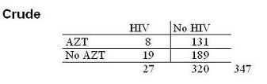
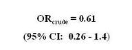
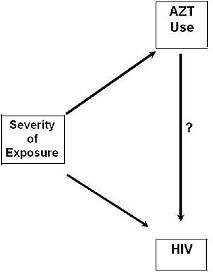
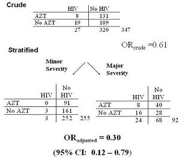

Example: Counfounding Bias - HIV and Needlestick
Lead Editor(s): Jeff Martin, MD
Treatment after HIV Needlestick Exposure
An example of counding can be found in this 1997 study in the New England Journal of Medicine (Li).
This is a case-control study in health care workers looking at the effectiveness of AZT in preventing HIV seroconversion after a needlestick accident.
- The context is that needlesticks among health care workers from patients with HIV disease are unfortunately all too common.
- The question is whether taking the drug called AZT right after a needlestick can prevent the healthcare worker from becoming infected with HIV.
Failure of Randomized Clinical Trial
Attempts to address this question with a RCT did not work because
- no doctor or nurse wanted to be randomized to the placebo group.
- However, there was no evidence for many years whether taking antiretroviral therapy, replete with its toxicity, would do any good in preventing HIV acquisition.
- So, this had to be sorted out observationally and luckily there were at least some doctors and nurses who did not elect to use AZT such that we have some variability to work with.
Observational Study Parameters
So, the exposure in question is the use of AZT and the
Cases were health care workers who had acquired HIV after a needlestick and
- controls were health care workers who did not acquire HIV after a needlestick.
Cruse Analysis of Study Data
In the crude analysis, the OR was 0.61, with a confdence interval of 0.26 to 1.4.
- There is no strong evidence of a benefit from AZT.


Could confounding be present?
Confounding - Look at Severity of Exposure
As seen in the figure below, we should be concerned about the severity of exposure.
- It is likely that the health care workers who took AZT were also the ones who had the most severe exposures (i.e. deep wound, big inoculum, end-stage AIDS patient source), the same types of exposures that are associated with a greater probability of HIV transmission.

HIV and Treatment - Stratified Anaysis
When one controls for severity of exposure, below,
Now, we have sufficient evidence to reject the null hypothesis and conclude that AZT is effective in preventing HIV seroconversion.

References
Li, R. W., & Wong, J. B. (1997). Postexposure treatment of HIV. N Engl J Med, 337(7), 499-500; author reply 501.